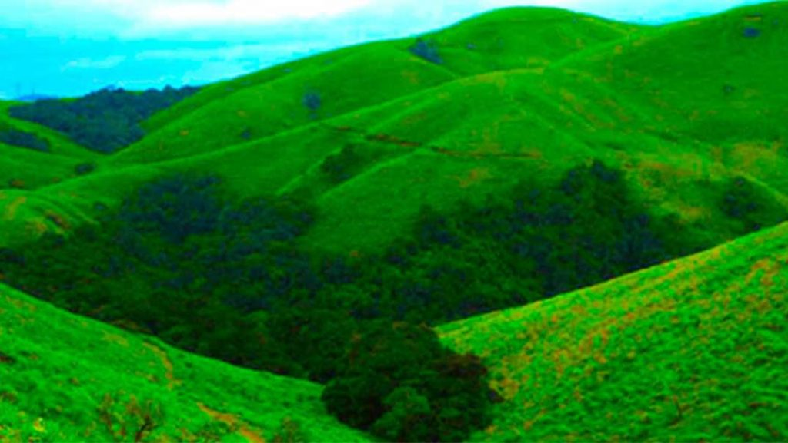

Places to visit in Pathanamthitta

Pathanamthitta is a district in the state of Kerala that is famous for its natural beauty, fairs and festivals. A Tour to Pathanamthitta gives you the wonderful chance to view nature at its very best. The vast stretches of forests, the meandering rivers and the rural topography combine to create an irresistible charm. Pathanamthitta was formerly under the rule of a Pandalam king which had links with the Pandya kingdom. It derives its name from two words - Pathanam and Thitta. The meanings of the words are a cluster of houses by the river side. A large variety of vegetables and spices are cultivated in the fertile lands of this land locked district. There are a large number of rubber plantations as well.
- Gavi Eco Tourism 
- Konni and Adavi
- Sabarimala
- Aranmula
- Thriveni Sangamam
Gavi is an Eco-Tourism a project of the Kerala Forest Development Corporation located in Pathanamthitta district, Kerala. Gavi, located in Pathanamthitta district offers its visitors activities like trekking, wildlife watching, outdoor camping in specially built tents, and night safaris. Distance from Pathanamthitta To Gavi is 109 km 428 mtrs & Travel Time is 2 hour 5 mins By Road. Gavi is 14 km south west of Vandiperiyar, 28 km from Kumily, near Thekkady. Gavi is inside the Ranni reserve forest. Gavi is a part of Seethathode Panchayath in Ranni Taluk. Gavi is part of the Periyar Tiger Reserve, and the route can be covered by car from Vandiperiyar.
Location:Pathanamthitta
A hill town, Konni is famous for timber trade and wild elephant training centre. This is a charming town with lush meadows and hills stands on the bank of river Achakovil. It is surrounded by clove and pepper plantations. Elephants trapped from the forest area are also tamed here. Konni with a vast expanse of lush green forests is the eco-tourism hub of Pathanamthitta district, which has a project with elephants at its nerve centre. An elephant kraal (shelter), a photo gallery, modern elephant shelters, an elephant museum, shops to sell forest produce, a children’s park, a biogas plant and a paper-making unit are part of the project, offering vivid experiences to the visitors.
Location:Pathanamthitta, Kerala – 689699.

Sabarimala is situated 72 km from Pathanamthitta town, 191 km from Thiruvananthapuram and 210 km from Kochi. It is the ‘Sacred Abode of Lord Ayyappa’ and one of the most important Hindu pilgrim centre in the country.The traditional route to Sabarimala is from Erumeli (40 km.). Other routes are from Vandiperiyar, Uppupara and Chalakkayam via Plappally. These routes are famous for these scenic splendour and mythological value. Sabarimala – The holy shrine is located amidst dense forests in the rugged terrains of Western Ghats. Inhabited by various wildlife species. Millions of pilgrims from all over the Country assemble here during the most arduous festivals called as ‘Vishu Vilakku’ in April, ‘Mandalapooja’, in the months of Vrichikam Dhanu (Nov. – Dec) and ‘Makaravilakku’ in mid January, coinciding with Sankramam.
Location:Pathanamthitta, Kerala

Aranmula is a small town situated at a distance of 15 km from Pathanamthitta is surrounded by green hills and the holy river Pampa flowing through it. There is an ancient Parthasarathy temple dedicated to Lord Krishna. This town is also famous for Aranmula Kannadi, handmade metal-alloy mirrors unlike normal silvered glass mirrors and eliminates secondary reflections typical of back surface mirrors. These mirrors are unique and the exact metals used in the mirror are not known however metallurgists believe that the ally is a mix of copper and tin.
This town is also famous for Aranmula Vallamkali, the annual regatta of the snake boat during the festival of Onam. These boats are 30 feet long and carry four helmsmen, hundred rowers, and twenty-five singers. Vasthuvidya Gurukulam a unique institution of Indian architecture and mural paints, established for promotion and preservation of Vasthuvidya and mural paintings is located here.
Location:Aranmula,Pathanamthitta,Kerala

Thriveni Sangamam is situated at a distance of 64 km from Pathanamthitta on way to Sabarimala and is the meeting point of the holy Pamba River that meets Manimala River and Achankovil River. It is a sacred place for the Hindus and pilgrims on way to Sabarimala Temple stop here and take a dip in the holy water to wash away their sins. It is a beautiful place with natural surroundings and millions of visitors come here to enjoy the beautiful landscape.
Location:Pathanamthitta, Kerala